Home - Discography - Reviews - Flyers - Sounds |
| Indiepop.it - May 2007 VV.AA - "I Would Write A Thousand Words" A Tribute To The Television Personalities - Volume 2
|
|
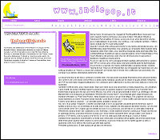 |
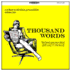 Alzi la mano chi pensava che i ragazzi di The Beautiful Music facessero sul serio quando hanno promesso una serie di dieci (10) album tributo ai Television Personalities. E invece, a poco più di un anno dal primo volume ecco materializzarsi il secondo, che continua - non soltanto nel titolo - l'ottimo lavoro iniziato da "If I could write poetry". Questo "I would write a thousand words" è una replica del predecessore, con Bart Mendoza degli Shambles che subentra al compianto Nikki Sudden nella redazione delle liner notes, una copertina disegnata dalla premiata ditta Ylva Lindberg/Niklas Gustafsson (già su queste pagine come Friday Bridge e This Year's Model) e diciannove cover che non diminuiscono in passione e dedizione rispetto al volume primo. Fa un po' specie che con la pioggia di tributi capitata ultimamente le canzoni dei TVP si riconoscano ormai dalla cover precedente anzichè dall'originale, ma in fondo è a questo che l'opera dell'etichetta Canadese tende: rendere l'opera di Dan Treacy (e di Edward Ball, qui omaggiato dai Superczar con una soffusa rendition di "There's a cloud over Liverpool") al mondo, fare in modo che si diffonda il più possibile, che compia il suo destino diventando patrimonio di tutti. Le diciannove tracce del disco cambiano sovente stile, che dal power-pop degli Shambles arriva alla psichedelia dei Cult 45's (di Colin Swan, Direct Hits) e a tanto, tanto indiepop, giusto per ricordare in quale ambito l'influenza dei TVP ha esercitato maggiore attrazione; non cambiano però l'attenzione e la resa dei brani, tutti poco meno che splendidi. I preferiti? Difficile dirlo, anzi, impossibile. Stavo per citare la piccola zona twee a metà programma, con Jonathan Caws-Elwitt che porta "Geoffrey Ingram" a spasso per un giardino inglese in primavera e una "Favorite Films" trasformata in gioia anni 60 dai Loch Ness Mouse, ma come si fa ad ignorare tutto il resto? La centrifuga C86 dei Mandervilles che eseguono al rallentatore "Where's Bill Grundy Now?", le schitarrate glam degli Airwaves (ex Swedish Whistler) su "Part Time Punks", Nikki Sudden da solo e con gli Swell Maps, The Legend! che dal suo vasto repertorio di covers Tracyane estrae stavolta "Look Back In Anger", il misto skiffle-Jam dei francesi Summer Factory sulla stessa canzone. Le cito tutte (potrei, badate) o basta così? No, non c'è un pezzo "migliore", li dovete ascoltare tutti, e se vi accaparrate una delle prime ennemila copie vi spetta un bonus disc con la bellezza di diciotto brani in più, outtakes ed anticipazioni dal terzo volume, con vecchie conoscenze come Tim Chaplin (già incontrato da solo e coi Luminous), una fan-tas-ti-ca cover tutta chitarre di "Where the rainbow ends" dei Catalysts di Ulric Kennedy, i nostri Sixtynine and the Continuous People dal vivo ed in splendida forma, una bella versione acustica di "I know where syd barret lives" del già citato Colin Swan e persino i TVP stessi, colti sul palco a Ny nel 92. E se li ho citati quasi tutti anche qua ci sarà un motivo. Sarebbe forse opportuno sorprendersi di fronte alla continuata consistenza del progetto, alla immancabile forza delle esecuzioni (quella delle canzoni la conoscevamo), al piccolo miracolo che si ripete uguale su dieci o quaranta cover, fa lo stesso. Ma siamo già oltre tutto questo. Prendete questo disco. E fate spazio per gli otto che verranno. (Salvatore Patti) |
| Indiepages - September 2006 VV.AA - "If I Could Write Poetry" A Tribute To The Television Personalities
|
|
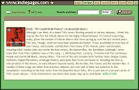 |
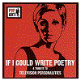 Although I can think of a dozen TVPs covers floating around on various releases, I think this may be the first full tribute album for the highly influential band. It's kind of surprising, really, given the number of tribute albums that have sprung up over the last several years. This one, though, could not have been planned any better. It was assembled by true fans of Dan Treacy, and includes contributions from many of his friends, peers and disciples, including Nikki Sudden (who also wrote the liner notes), the Baskervilles, the Bartlebees (although I never knew that "And Then Suddenly" was a TVPs song...), Biff Bang Pow!, Lovejoy, Sixtynine And The Continuous People and Darrell Whitbeck, among others. The rest of the cast includes both familiar faces (Happy Couple, Miniskirt, Higher Elevations, Armitage Shanks) and bands that I'd not yet heard of, including the Void (a reincarnation of the Mixers, an early Whaam! Records band), the No Men, the Thanes and the Mandervilles. A handful of these songs are taken from previous releases, but over half of them are exclusive to this compilation. According to the liner notes from the Beautiful Music folks, this is part one of a ten part series of TVPs covers albums - I'd be interested to see what other bands step up to contribute!. (Indiepages) |
| The Fake Magazine - November 2005 "I Can't Hear You Anymore / Shadows That Haunt Me" 7" Single
|
|
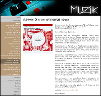 |
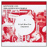 Sixtynine and the Continuous people vivent dans l'underground pop italien. Depuis quelques années ces activistes du revival sixties branchent leurs guitares aux sons d'un punk psychédélique bien tripé et d'un esthétisme pop art bien acidulé. Fasciné par Syd Barrett et le Floyd premiére génération, Sixtynine and the Continuous people reviennent avec un single (pressé uniquement en 45 tour, donc destiné aux véritables Rock'n'Roller !!). La face A, "I can't hear you (anymore)", s'écoute avec plaisir telle une jolie pop song bien sentie évoquant d'avantage les Modern Lovers ou le Velvet que le psyché sixties anglais. La Face B, "Shadows that Haunt me" est une reprise inédite du groupe Television Personnalities (dont un tribute vient de sortir). Une fleur maudite de l'indie pop anglaise des années 80 considérée par Alan McGee comme l'un des meilleurs groupes pop avec les Beatles. Le trio italien redonne donc une vie é ce morceau oublié, qui n'aurait pas du l'étre. Son pourrave, voix maudites, basse claquante et mélodies nostalgiques. Merci pour ces ingrédients purs sans engrais qui font vivre le Rock'n'Roll. Alors dépéchez-vous, cette pépite de 45 tours n'a été pressée qu'é 500 exemplaires...(Alexis Kacimi). |
| Losing Today #7 - October 2005 VV.AA - "If I Could Write Poetry" A Tribute To The Television Personalities
|
|
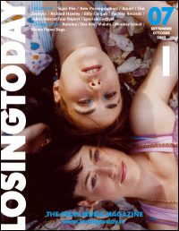 |
Dieci album di cover dei TVPs nei prossimi dieci anni: duecento canzoni per dire a Dan Treacy e ai suoi Television Personalities quanto amiamo quello che hanno scritto, sin da quando nel 1978 cominciarono a cantare di quei "Part Time Punks". L'iniziativa è della The Beautiful Music, etichetta con base a Ottawa. L'entusiasmo e la tenacia del promotore Wally Salem hanno contagiato personaggi del calibro di Nikki Sudden (che ha scritto anche le note del CD) e Alan McGee (qui presente con gli storici Biff Bang Pow) che regalano due perle alla raccolta. Ma è molto divertente fare la conoscenza anche degli agguerriti Mandervilles o dei lievi Thanes. Ed è piacevole ritrovare vecchi amici come i Baskervilles, i Lovejoy e gli italiani Sixtynine And The Continuous People. I cicli delle mode musicali e il ritorno dei decenni sembrano non toccare una figura come Dan Treacy, e non c'entrano i perdenti, l'alcol o la droga. E' soltanto l'amore per la musica pop, quella che non ha uno straccio di coolness e resta lontana dalle copertine ma non perde il sorriso, che ti taglia proprio fuori. "Se sapessi scrivere poesia lo farei", oppure suonerei ancora le canzoni dei Television Personalities. (Enzo Baruffaldi). |
| Indiepop.it - September 2005 VV.AA - "If I Could Write Poetry" A Tribute To The Television Personalities
|
|
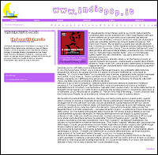 |
E' stupefacente come il tempo agisce sui ricordi. Della trasferta Londinese dello scorso dicembre per il Mon Gala Papillon pensavo di aver sofferto più di ogni altra cosa il concerto dei ritrovati Television Personalities; rumorosi, eccessivi, incazzati (il plurale è usato per comodità, perchè mai come in quella occasione i TVP erano Dan Treacy). Ma se ripenso a quelle due serate alla Bush Hall, il ricordo più vivido, l'unico impresso a fuoco nella memoria, è quello di Dan Treacy che storpia "I Know Where Syd Barrett Lives" allungandone all'inverosimile le sillabe, è sempre lui che snocciola nomi su "Salvador Dali's Garden Party", che in un torrenziale duetto ripete sino allo sfinimento "You don't deserve us". Un pensiero ossessivo. Dev'essere qualcosa di molto simile a ciò che hanno provato, in svariati momenti del passato, i partecipanti a questo disco-tributo all'arte di Treacy e dei TVP, sorta di culto sotterraneo di dimensioni ragguardevoli per una band tanto sconosciuta al pubblico quando seminale per le sorti della musica indipendente. E' così che funzionano i tributi: qui si vola su Manica ed Oceano, ma a dispetto delle distanze geografiche nessuno dei gruppi coinvolti è in grado di simulare indifferenza. Comunque la mettiate, "If I Could Write Poetry" è un profondo atto d'amore, supportato dalle citazioni riportate nel booklet: la più intensa, "hanno cambiato la mia vita, spero che cambino la vostra" è di Alan McGee, presente con i Biff Bang Pow ed una cover d'annata di "Someone To Share My Life With" che è una delle cose più preziose e antiche del disco. Nessuno è qui a fare la comparsa: Stille di sudore e assoluta dedizione imperlano l'eclettica versione di "La Grande Illusion" dei Baskervilles, resa con preminenza di basso e insidiata dall'elettronica di Christoph, una fantastica "Salvador Dali's Garden Party" ai confini delle lacrime di Spiggott (Vince Keenan, ex 1,000 Violins) e gli Zane che la ispessiscono in miracolose spire dark, e ovviamente, emozionati al cospetto di "The Girl Who Had Everything", i nostri Sixtynine and the Continuous People, la cui esistenza è votata allo stesso scopo di questo album. Ma lasciato da parte il fattore emotivo, che pure così tanta parte gioca in questi solchi, questo album compie un piccolo e insperato miracolo. Riesce a dimostrare l'importanza della band che omaggia non in virtù dei nomi coinvolti, ma con la semplice, lucida esposizione del suo valore artistico. Chiunque nutra ulteriori dubbi sull'importanza di Treacy per le sorti dell'indiepop tutto uscirà da questo disco come San Pietro dal derserto. Ogni artista chiamato dalla piccola The Beautiful Music è di fatto impegnato - consapevolmente o meno - a restituire a Treacy il possesso della scena: se l'inevitabile presupposto della musica dei TVP erano la bassa fedeltà e la voce ostinatamente sgraziata del leader, le riletture alternative-ma-non-troppo di questo tributo sollevano il velo sulle sue strutture armoniche, scartano diciannove caramelle pop e riff sui quali sono state costruite intere carriere (la splendida "World of Pauline Lewis", qui dei Thanes), svelano inusitate e profonde morbidezze ("And Then Suddenly" coi tedeschi Bartlebees che cercano di nasconderne la matrice Ramonesiana, "The Dream Inspires" affidata alle cure botaniche della Happy Couple) proponendone versioni fedeli, ingentilite e talvolta volgarizzate (gli Armitage Shanks mettono abiti punk a "14th floor") che hanno in comune il fatto di far risplendere luminosissime le melodie, rinnovando la bellezza delle canzoni e tracciando un improbabile albero genealogico a ritroso: i Camper Van Beethoven più bucolici della title-track, gli Shop Assistans negli accordi di "A Good and Faithful Servant" e così via. Un lavacro indiepop. Ma al di là della sterile elencazione di scaletta, ciò che più importa di questo tributo è che dopo averlo ascoltato vi mettere a cercare tutte le canzoni dei TVP nel vostro archivio di mp3, a sondare mercanti di vinile e spulciare bootleg impolverati: If I Could Write Poetry è un disco che trasforma i distratti in fans. Ad un atto d'amore non si può chiedere di più. (Salvatore). |
| Rumore #164 - September 2005 VV.AA - "If I Could Write Poetry" A Tribute To The Television Personalities
|
|
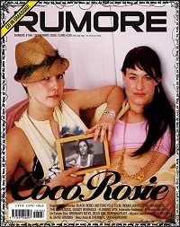 |
I Television Personalities sono una storia che per spiegarla ci vorrebbe una intera guida pratica di Rumore. Siccome nessuno la scriverà mai, dovrete accontentarvi delle parole vergate qui da Alistair Fitchett, il miglior fanzinaro che la storia dell'indie pop britannico ci abbia mai consegnato, e da Alan McGee, che considerava addirittura i Television Personalities migliori dei Beatles. Oppure potreste dare ascolto agli illustri ragazzini che oggi li riscoprono: gente dal gusto fine come Futureheads e Jens Lekman. O infine procurarvi questo tributo, il primo di una serie che l'etichetta canadese Beautiful Music ha intenzione di dedicare alla formazione inglese. Tra i partecipanti: Nikki Sudden e Biff Bang Pow, mentre la bandiera italiana viene sventolata dagli ottimi Sixtynine And The Continuous People. Niente nomi illustri, solo una ventina di canzoni bellissime che rallegrano e commuovono. (Arturo Compagnoni). The Television Personalities are a story which, to be told, would need a full "Rumore" handbook. But since nobody will write it you'll have to be content with the words written here by Alistair Fitchett, the best fanzine writer in the history of british indie pop, and by Alan McGee, who considered the Television Personalities potentially even better than the Beatles. Or you could listen to those illustrious youths who are re-discovering them today: people with a fine taste like the Futureheads and Jens Lekman. Or simply get hold of this tribute, the first in a series which canadian label The Beautiful Music intends to dedicate to the british band. Amongst the participants: Nikki Sudden and Biff Bang Pow, while the italian flag is waved by the excellent Sixtynine And The Continuous People. No illustrious names, only twenty wonderful songs which will cheer you up and touch you. |
| Polaroid - Un Blog Alla Radio - July 2005 VV.AA - "If I Could Write Poetry" A Tribute To The Television Personalities
|
|
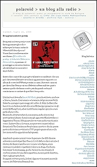 |
Se sapessi scrivere poesia vorrei farvi appannare gli occhi e saltare per la stanza cantando Where's Bill Grundy now? Vorrei farvi sorridere mentre ascoltiamo If I could write poetry - A tribute to Television Personalities, e passiamo il pomeriggio a cercare notizie su adorabili band sconosciute e improbabili. Questo disco nasce da un progetto talmente sconsiderato che non può che avere all'istante tutto il mio appassionato supporto: 10 album di cover dei TVP nei prossimi 10 anni. Duecento canzoni per dire a Dan Treacy e ai suoi Television Personalities quanto amiamo quello che hanno scritto, sin da quando nel 1978 cominciarono a cantare di quei Part time punks. L'iniziativa si deve alla Beautiful Music, piccola etichetta con base a Ottawa, Canada. L'entusiasmo e la tenacia del promotore Wally Salem ha contagiato personaggi del calibro di Nikki Sudden (che ha scritto anche le note del cd) e Alan McGee (qui presente con gli storici Biff Bang Pow), ed entrambi hanno regalato piccole e rare perle alla raccolta. Ma è molto divertente fare la conoscenza anche di nomi mai sentiti prima (almeno da me) come gli agguerriti Mandervilles o i leggerissimi Thanes. Ed è piacevole ritrovare anche vecchi amici come i Baskervilles o i Lovejoy, e soprattutto i nostri italiani Sixtynine & The Continuous People (sono convinto che da queste parti molti si siano avvicinati ai TVP proprio grazie a loro e alla loro memorabile apparizione bolognese). Ascoltando queste canzoni viene da pensare che difficilmente arriverà un revival per Dan Treacy. I cicli delle mode musicali e il ritorno dei decenni sembra non toccare certe figure, e non c'entrano i maledetti o i perdenti, l'alcol o la droga. E' soltanto l'amore per la musica pop, quella che non ha uno straccio di coolness e resta lontana dalle copertine, ma non perde il sorriso, che ti taglia proprio fuori. Se sapessi scrivere poesia, lo farei. Oppure vi suonerei ancora le canzoni dei Television Personalities. (ebi). |
| Indiepages - May 2005 "I Can't Hear You Anymore / Shadows That Haunt Me" 7" Single
|
|
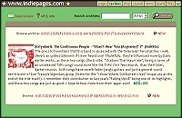 |
The press kit mentions that this band is obsessed with the Television Personalities - well, there's an understatement if I ever heard one! Thankfully, they're influenced more by Dan's earlier works, as these two songs (the b-side, "Shadows That Haunt Me", being a cover of an unreleased TVPs song) sound more like the TVPs' first few records, than their later, darker records. Both songs have reverb-laden jangly guitars and just a general sound reminiscent of Dan Treacy's legendary group (listen for the "I Know Where Syd Barrett Lives"-esque coo at the end of the title track!). I remember their contribution to last year's "Falling Uphill" being one of its highlights, and these two songs are just as good. I hope to hear more from them again soon! (Indiepages). |
| Delusions Of Adequacy - February 2005 "I Can't Hear You Anymore / Shadows That Haunt Me" 7" Single
|
|
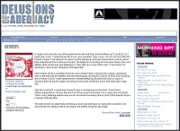 |
A singles club done the way of the great, like the late Sub Pop one that offered up "Love Buzz", is a great idea. A new 7" delivered directly to your door quarterly? Sign me up. I'm not sure how often the Felicité Singles Club releases its wares, but the Hamburg, Germany-based label could do worse than Sixtynine and the Continuous People. The Italian trio consisting of musicians Filippo, Pier, and Stefano (first names only, like Maddona or Cher) offer up a song of their own, "I Can't Hear You (Anymore)", and a cover, "Shadows That Haunt Me". Side A starts off like a Jonathan Richman solo number before crashing into snappy, upbeat pop until a brief interlude of distorted Thurston Moore guitar, turning the song on its head and sounding like a myriad of Sonic Youth-spawned torch bearers/offspring. But that only lasts a couple of seconds, then it's back to happy-sounding, if not lyrically confirmed, music that ends with a sigh. Ahh. Side AA (not Side B. A quote from Daniel Treacy is emblazoned on the label: "I don't mind influencing people as long as they don't rip off my songs for B-sides".) is a super obscure Daniel Treacy song, featuring reverb-heavy vocals and distant-sounding drums, kind of Phil Spector-esque in design and execution. The band shows an adept hand at finding a sound and sticking to it, making the song their own and seamlessly setting it next to an original: the perfect recipe for any single. (Beren Ekine-Huett). |
| Indiepop.it - December 2004 VV.AA. - "Falling Uphill"
|
|
|
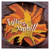 Come un puzzle i cui pezzi sparsi sul tavolo finiscano insperabilmente per combaciare, "Falling Uphill", esordio discografico per l'etichetta Windless Air, rivela il suo mistero poco alla volta. Un primo sguardo alla tracklist lascerà sconcertati anche i più esperti: pochissimi i nomi familiari in un contingente di sconosciuti gruppi americani ed europei accostati senza significato apparente. Per cominciare a ricomporre il puzzle basta però cominciare dal nome più noto: i Television Personalities. Una veloce ricerca confermerà che questa raccolta nasce sotto il segno della band di Dan Treacy: Darrell Whitbeck, boss della Windless Air, gestisce infatti un sito dedicato al culto TVP, culto al quale non hanno mai fatto mistero di appartenere Baskervilles, Sixtynine and The Continuous People e Bartlebees; Aggiungiamoci Jowe Head, che dei TVP è stato bassista sino alla metà dei 90, i tedeschi Woog Riots che nel repertorio hanno un pezzo intitolato "Television Personalities" e capirete allora che Falling Uphill sta a metà strada tra un silente omaggio alla musica del redivivo Treacy e un tentativo di tracciare una mappa del suo lascito alla musica del 2004. Mr Whitbeck fa le cose in piccolo ma le fa per bene: sceglie un inedito del calibro di "Virgin and a Whore", perfetto distillato dell'energia agrodolce della band inglese, e gli costruisce attorno una raccolta ben calibrata, a cominciare dall'eccezionale contributo di Barbara Manning, icona dell'indie rock USA che nonostante calchi le scene dalla metà degli anni 80 è ancora in grado di esprimere al meglio la sua acustica graffiante nel bel jangle-pop di "Dreaming", caratterizzato da un'intensa impronta melodica e da una rabbia inespressa che tiene sulla corda l'intero pezzo. Nonostante l'eterogenea provenienza, la qualità dei brani si assesta su livelli medio-alti, e ci piace ricordare, oltre alla già nota "John Riley and The Housewives Who Love Him" dei Baskervilles che da queste parti ha già assunto la statura del classico, il contributo dei sempre ottimi Sixtynine and The Continuous People, la cui "Sadness in Disguise" è delizioso esercizio di pop psichedelico che sostituisce i fiori alle clave, il vecchio Jowe Head con le tenebrose e rauche spire di "Serpentine", la malinconia nonsense dei tedeschi Katze alle prese con il refrain killer di "People Jumping" e la sorprendente "Your Old Volvo" di The Big Empty, con il cantante Simone Felice nei panni di un Richard Buckner apocrifo, anche per il voluttuoso abbandonarsi al ricordo. Un'ottima occasione per avvicinarsi a tante sconosciute band da entrambi i lati dell'oceano (la partecipazione inglese è minoritaria) e una gustosa anticipazione all'album tributo dedicato ai Television Personalities. (Salvatore). |
|
| Indiepages - November 2004 VV.AA. - "Falling Uphill"
|
|
| It's funny - if I had just seen this compilation's tracklisting, I would've told you it was from the mid to late 90s, and probably a cassette comp from England or Germany, at that. The list contains names that I haven't heard in ages, like Barbara Manning, the Bartlebees, the Television Personalities, Amanda By Night and Rockformation Diskokugel (the latter two of which I didn't know even existed anymore!). Of course, I would've also noticed current bands like the Baskervilles, the Long Decline and Angel Racing Food, but there are so many names I've never even heard of, that I bet I could've been easily tricked. This is one of those comps that is simply a collection of the compiler's favorite bands, and it's pretty obvious to see that he's a very big fan of the Television Personalities and the many bands and labels that the band has influenced from classics like the Bartlebees and Little Teddy to newer bands like the Big Empty, Milton Fisher and, well, most of the other bands from around the world that appear on this disc. In fact, I'm quite surprised to not see any of the Perfect Pop crew represented here! Highlights include the tracks from Woog Riots, Sixtynine And The Continuous People, Katze (imagine A Boy Named Thor as a full band), Container Drivers and Rockformation Diskokugel, though there are many more. A must for fans of offbeat European pop! (Indiepages) | |
| Le Manchester Magazine - November
2004 "I Can't Hear You Anymore / Shadows That Haunt Me" 7" Single
|
|
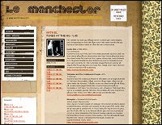 |
Sixtynine and The Continuous People är från Italien och är högt influerade av Television Personalities. Något som hörs långa vägar, något som de själva heller inte förnekar. Tvåspårs-sjuan som bland annat går att få tag på via det tyska bolaget Felicite eller svenska Popkonst består av formidabla »I Can’t Here You (Anymore)« och »Shadows That Haunt Me«, som är en osläppts gammal Television Personalities-låt, bara framförd en gång av Dan Treacy, live 1988. Lättlyssnad och bekväm indie. (Redaktionen). |
| Think Small - November 2004 "I Can't Hear You Anymore / Shadows That Haunt Me" 7" Single
|
|
| Bands die hun adoratie voor The Television Personalities niet onder stoelen of banken steken (en dat moet je letterlijker nemen dan ‘klinken als’) was vooral iets van ruim tien jaar geleden (The Bartlebees, The Tables), maar Sixtynine And The Continuous People laat horen dat dat niets met gedateerdheid te maken heeft. De Italiaanse band debuteert met twee leuke, licht psychedelische jangly indiepopsongs, waarvan het misschien wat ver gaat te zeggen dat ze wereldschokkend zijn, maar ze doen in elk geval uitzien naar een volledig album. En daar zijn 7"s, wat zien we ze toch weinig de laatste tijd, nu precies voor. (Martijn Grooten). | |
| Rough Trade - October 2004 "I Can't Hear You Anymore / Shadows That Haunt Me" 7" Single
|
|
| Sixtynine And The Continuous people are from Italy and they play jingle jangle intimate pop songs. It sounds like a record Whaam or Dreamworld would have released. The B side is a cover of an unreleased Television Personalties song performed once by Dan Treacy at a solo gig in 1988. Limited and numbered to 500 copies. | |
| Musicologi - October 2004 "I Can't Hear You Anymore / Shadows That Haunt Me" 7" Single
|
|
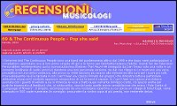 |
I
Sixtynine And The Continuous People sono una band del pordenonese attiva dal
1998 e che dopo varie partecipazioni a compilations approdano ora al loro primo
singolo 45 giri e lo fanno per l'etichetta tedesca Felicitè. Grandi fan
dei Television Personalities reinterpretano qui la sconosciutissima "Shadows
That Haunt Me" (eseguita da Dan Treacy solo una volta in un concerto londinese
di sedici anni fa!) dandone una loro personale versione. Se dal vivo Filippo
& Co. mostrano una vena psicadelica ed una certa ruvidezza, alla prova su
vinile lasciano più spazio alla melodia ed alla cura per i suoni
più soft. Prova eloquente ne è la facciata A con "I can't hear
you" (pezzo firmato dal gruppo) che dimostra tutta la particolare attitudine al
pop ed il morbido approccio compositivo di cui la band è capace. In "I
can't hear you" spicca una chitarra suonata con i guanti di velluto a cui si
intreccia la voce a tratti quasi narrante di Filippo. Certo, c'è spazio
anche per qualche impennata di feedback che, al sottoscritto, ricorda tanto
quelle anime sensibilissime che erano i Pale Saints di "Language of flowers".
Il singolo, accompagnato da una nostalgica copertina su cui spicca un collage
di foto/ritagli, viene stampato in 500 copie numerate. Un consiglio:
procuratevi la vostra copia al più presto, non resterete delusi.
(Steve). Sixtynine And The Continuous People are active since 1998 and, after various compilation tracks, have now released their first 7" single on the german label Felicite. Big fans of the Television Personalities, they cover here the unknown "Shadows That Haunt Me" (performed only once by Dan Treacy at a London gig 16 years ago!) in their own personal way. Instead of the rough psychedelic vein which charachterizes their live performances, on this record they leave more room to melody and softer sounds. We can find evidence of this on the A side: "I Can't Hear You Anymore", a self penned number which shows the particular attitude to pop and the soft songwriting approach which the band is capable of. The highlight of "I Can't Hear You Anymore" is the velvet gloved guitar playing which interlaces with the sometimes almost narrating vocals. Sure, there is room for some bristles of feedback, which reminds me so much of those sensitive souls who were the Pale Saints of "Language Of Flowers". The single comes with a nostalgic sleeve sporting a collage of pictures and clippings and it's limited to 500 numbered copies. A suggestion: get your copy as soon as you can, you won't be disappointed. |
| Indiepop.it - September 2004 "I Can't Hear You Anymore / Shadows That Haunt Me" 7" Single
|
|
|
Valeva la
pena attendere la pubblicazione ufficiale di questo singolo (le cui due canzoni
giravano da un po' sui winamp di redazione) per la stupenda grafica realizzata
da Felicité, che aggiunge piacere feticista al già valido
ascolto. "I Can't Hear You (Anymore)", il primo pezzo originale nella sin qui
scarna discografia dei Sixtynine, è una piacevolissima digressione dai
temi soliti della band, che propone una bella variazione in chiave soft del suo
repertorio di cover. Solido, ritmato con un refrain efficace e piacevole e un
giro di chitarra che invita alla nostalgia, sarebbe stato un hit alternativo
nel 1986 e merita ogni lode. Sull'altro lato "Shadows That Haunt Me" torna ad
omaggiare Dan Treacy, ovviamente con un pezzo pressoché sconosciuto,
eseguito solo una volta dall'autore in un concerto Londinese di sedici anni fa.
Non farò finta di conoscere l'originale, dirò solo che Filippo e
compagni la eseguono con i guanti, appassionato rispetto e buon dinamismo
assimilandola in stile al pezzo sul lato A: bello e sciolto, come una versione
casalinga dei TVP. Due numeri più morbidi rispetto alle esibizioni live
del terzetto, ma per il sottoscritto addirittura più godibili. I
Sixtynine cominciano a farsi conoscere fuori dall'Italia (recente la
partecipazione alla raccolta Windless Air "Falling Uphill") e Dio sa se lo
meritano. Questo singolo dovrebbe convincere anche i più scettici: in
bocca al lupo. (Salvatore). The official release of this single (the two songs have been playing for a few months in our editorial staff's winamps) was well worth the wait: the wonderful artwork by Felicite adds fetishist pleasure to the already good listen. "I Can't Hear You (Anymore)", the first self penned title in the band's so far short discography, is a very pleasant digression from the band's themes. Solid, rhythmical, with a nice and effective refrain and a guitar which invites to nostalgia, it would have been an alternative hit in 1986 and it deserves all praise. On the flip side "Shadows That Haunt Me" pays homage to Dan Treacy with a cover version of an obscure Television Personalities song, performed only once by Dan Treacy at a solo gig 16 years ago. I won't pretend to know the original, I will only say that the Continuous People treat it with kid gloves, respect and dynamism, assimilating it to the style of side A. Beautiful and easy sounding, like a "domestic" version of the TVPs. The "Sixtynines" are beginning to get some attention outside Italy (see their recent contribution to the international compilation "Falling Uphill" on Windless Air) and they sure deserve it. |
|
| Music Boom - May 2004 "No Biz": The Radio Dept. + Sixtynine and the Continuous People Live 01/05/2004 - Il Covo, Bologna
|
|
| Da un punto di vista
strettamente logico, non c'era motivo che il Covo di Bologna fosse pieno in
ogni ordine di posti per il concerto di due band praticamente sconosciute, e
senza nemmeno un disco in distribuzione in Italia. Ma il live dei Radio Dept +
Sixtynine and the Continuous People a Bologna aveva poco a che fare con la
logica, sin dalla organizzazione affidata ad un manipolo di appassionati. Il
resto è stato un impressonante passaparola cittadino e internettaro che
dimostra come i mezzi di diffusione/promozione della musica siano ormai
definitivamente cambiati. Per esempio: tutti i presenti nelle prime file
conoscevano a memoria le canzoni dei Radio Dept, il cui disco uscirà in
Italia soltanto a Luglio (distribuzione: Spin!go. Meglio tardi che mai). E
c'è ancora chi nega l'importanza di soulseek nella promozione
dell'indie-rock.
Dato che si parla di band sconosciute ai più, urgono le presentazioni: i Radio Dept vengono da Malmoe a ricordarci che quel suono per chitarre, fuzzbox e drum machine nato a Glasgow negli anni 80 ha anche un futuro, oltre che un illustre passato: si parte dagli inevitabili Jesus and Mary Chain mediati dalla sensibilità armonica di un decennio di indiepop svedese (e qui parliamo di cose per esperti), che riesce a risultare godibile come un album dei Coldplay (per dire), però più sporco e meno odioso. Su internet se ne sono accorti quasi tutti, la stampa – tranne lodevoli eccezioni - deve ancora arrivarci, ma che i Radio Dept siano la popband svedese con più possibilità di sfondare i confini nazionali è già un dato di fatto, sancito da un contratto di distribuzione con la XL per il mercato inglese/europeo. Sixtynine and The Continuous People sono di Pordenone e sono una cover band dei Television Personalities, per alcuni dei perfetti sconosciuti e per altri (molto meno numerosi) la più grande band di tutti i tempi (dopotutto they could have been bigger than the Beatles). Se chiedete loro come mai hanno scelto di coverizzare un gruppo talmente oscuro vi rispondono che suonare tutti i dischi dei TV Personalities non gli bastava più, e ditemi se esistono motivazioni più pure di questa. La band scrive anche canzoni originali che in Italia pochi avrebbero il fegato di pubblicare, motivo per cui il loro primo singolo vedrà la luce nei prossimi mesi per la tedesca Felicité. Sono i Sixtynine ad aprire la serata al Covo con un set energico e intenso, che ha trasmesso tutta la loro dedizione alla causa: The Girl Who Had Everything, The Painted Word, La Grande Illusion sono titoli che hanno fatto sussultare pochi in platea, ma a rammaricarsene dovrebbero essere tutti gli altri. Quanto al clou della serata, la resa live dei Radio Dept non ha forse retto alle aspettative del pubblico da un punto di vista strettamente tecnico, ma la cosa non pareva interessare a nessuno. Il clima al Covo era quello di una festa, e la band si è vista stringere da un affetto che non conosceva ragioni. Che anche loro fossero nervosi si è capito dall'eloquente sorriso a trentadue denti tra Lisa (basso) e Martin (chitarra) dopo lo scrosciante applauso seguito al primo pezzo ("Keen O Boys", privata del feedback iniziale). Uno stupore che non li ha abbandonati sino all'ovazione finale, giunta dopo una traballante quanto preziosa esecuzione di "I don't need love, I've got my band". Piccola delusione per una "Where damage isn't already done" un po' gonfiata dalle tastiere, doppiata in emozione sia da "1995" che da "Your Father", intense e commoventi persino nella relativa bolgia del Covo/Sauna. Due tastiere (una a pile), due chitarre, un basso e un discman
(il minidisc costava troppo): le basi preregistrate di batteria – e
talvolta di basso – fanno indubbiamente perdere qualcosa alla band Svedese
sul palco, e se questo per il momento rende i RD una band "da studio" e ne
ridimensiona in parte lo status di "next big thing", l'entusiasmo del pubblico
di Bologna dice che in fondo non era così importante, non questa volta.
Restano negli occhi polaroid (eh eh) di una serata indimenticabile e a suo modo
unica, lontano dagli odori dello show business e per questo ancor più
preziosa. |
|
| Musicologi - December 2003 VV.AA. - "The Vegetable Man Project Vol. 1"
|
|
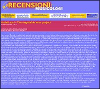 |
Non so se Cloned ne abbia già parlato su queste pagine, o se abbia solamente accennato alla sua esistenza. Certo è che in questo “project” troviamo nomi noti alla Destra Tagliamento, Sixtynine and the Continuous People, ed erano immancabili. Ora, capirete che recensire un brano su venti che compongono l’album farebbe tenerezza, quindi par giusto discorrere sommariamente del contenuto di questo originale dischetto in toto. Non faremo comunque terribili mistificazioni, inventando per geniali musicisti d’Oltremanica e d’Altritempi natali friulani e terrificanti testi in marilenghe: a questo c’è già chi concorre (mi viene un nome, mi viene un nome…). Qui parliamo del Diamante pazzo (anni di manicomio gli meritano l’appellativo, credo), Syd Barrett; e non della sua opera, ma di UNA sua opera: quella Vegetable Man che intitola il Cd (edito da OVNI – lo troverete mai? Forse da Floriano a PN…) e che possiede in sé i dettami compositivi di Baby Lemonade e la lisergia inarrivabile di Interstellar Overdrive. Non recensiremo il pezzo di Barrett, tranquilli, rimanete seduti e continuate a leggere. Vi consiglio comunque di ripescarlo, come ha fatto il sottoscritto, prima di affrontare il dischetto: avrete un valido metro di giudizio per valutarlo con coscienza. Segnaleremo solo i picchi (bello & brutto) dell’album, saltando felici tra le tracce, e vedrete che l’acquisto compenserà le difficoltà di reperimento. Il primo pezzo (Vegetable man?) rasenta il geniale, scivola laddove gli Einstürzende Neubauten non sarebbero giunti: Gastel Etzewane esordisce canticchiandola sotto la doccia. Davvero! Non scherzo, e il tocco di fino sta nell’aggiungere sovraincisioni (o c’è qualcuno con lui? Che maliziosi…) agli scrosci d’acqua. Dieci e lode. Effetto Doppler non sono male, cominciano come cloni tristini del reverendo Manson e finiscono in un tripudio dance (?). Seppelliti di malinconia chicagoana, che sta bene con l’Uomo di verdura, gli Yulan; mixaggio folle per gli americani Kable (chitarra a stecca… e la voce? La batteria? Passo…). Un 45 giri a velocità LP per i Drona Parva è folgorante; punk lisergico d’assalto per “The Linus Pauling Quartet” (sa di jazz, e invece…); Nick Drake sommerso nel frastuono per i Donna Vegetale (? Ma avranno solo questo pezzo in repertorio?). Fedele alla linea Nick Bensen, sovrumani e feroci i Krut 182 (niente a che vedere con i Blink), d’altre lande i Castemore (accordion, mandolino, flauto, contrabbasso… bucolici?) e tecnocrati i Menazone, gran versione decomposta nella pulsazione beat. Finalmente arriviamo ai Continuous… e li scopriamo i più vicini all’originale; d’altro canto seguaci di Syd lo sono oltre ogni dubbio. Ma l’inciso rovescia le prospettive, portando alla ribalta uno scomposto rock’n’roll dei bei tempi, dei mods in libera uscita punk. Psicotica, graffiante: ci siamo. A onor del vero non la migliore, ma la sua porca figura la fa. Concludiamo citando l’ottimo Max (ideale sottotitolo: “Crazy Diamond vs. Beck”), il tomwaitsiano Gnu, gli inutili Potage (in italiano? Lo temevo che prima o poi, uno…) e finiamo con Tom Carter – ma c’è davvero in mezzo a quel casino? Grande! Qualcuno meriterebbe passaggi in radio, qualcuno la gogna (pochi). Certo tutti meritano l’acquisto. Fine dello spot, adesso riascolto il disco e via così. (Daniele). |
| Il Mucchio Selvaggio n.
485 - May 2002 VV.AA. - "On A Distant Shore" A Tribute To Syd Barrett
|
|
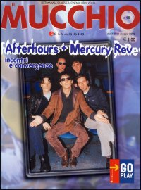 |
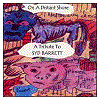 Spazio infine a un prodotto che, pur rappresentando in qualche modo un'anomalia per "Fuori dal Mucchio", presenta numerosi motivi di interesse. Nata per iniziativa della mailing list "Laughing Madcaps", la compilation "On A Distant Shore" raccoglie i contributi di band provenienti un po' da tutto il mondo, impegnate nella rilettura del repertorio di Syd Barrett e dei primi Pink Floyd, Fra revisioni calligrafiche e interpretazioni più o meno personali, e in attesa che il progetto trovi un consono sbocco discografico ufficiale, si segnalano le performance degli italiani Sixtynine & The Continuous People, presenti con una grintosa "Lucifer Sam" e una piu eterea "I Know Where Syd Barrett Lives", quest'ultima appartenuta in origine ai Television Personalities. (Aurelio Pasini). |
| Splendid - March 2002 VV.AA. - "On A Distant Shore" A Tribute To Syd Barrett
|
|
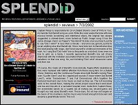 |
Captain Wasp is responsible for On A Distant Shore's cover of "If It's In You", my favorite Syd Barrett song as a kid. While the cover warps the tune with new musical trends (scratching and intentional skips), the original has always suggested a slowed-down, more fucked-up Public Image song. It has the same strange charm as Flipper's "Sex Bomb" B-side; once you hear it, just try to say "Did I wink?" in less than a minute -- and once you get old, just try to recall anything else that Barrett did. Since most kids turn to Barrett when they first start playing with drugs, don't bind yourself to childhood memories of his work. As I sang that "Did I wink" line so frequently as a kid (hell, it was even my line to girls as a teen), I recently approached Barrett's box set (Crazy Diamond) with the mistaken assumption that his solo career would be just 58 variations on that one song. No, such blinding "Did I wink" obsession came only from me. Of course, this made all of Barrett's more delicate, fragile efforts revelatory as they were replayed with faithful affection from these young fans On a Distant Shore. Sixtynine and the Continuous People show both Barrett's rocking Piper side ("Lucifer Sam") and his crippled pet sounds ("I know where Syd Barrett Lives"), while Transelemen T and Full Dimensional stitch together the fractured heart and soul in his music as best as they can. The lo-fi recording adds to the overall flavor, making the whole project sound like it went down over tea and biscuits in a secluded hospital room. Aside from Captain Wasp, the assembled bands do a superb job at making you second-guess any thought you had about Barrett's work. These days, his art may sell largely on the basis of his madness, but his music was honest enough to truly earn and deserve a great tribute record. This is it. (Theodore Defosse). |
| Rockit - March 2002 VV.AA. - "On A Distant Shore" A Tribute To Syd Barrett
|
|
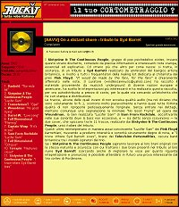 |
I Sixtynine & The Continuous People, gruppo di pop psichedelico sixties, inviano questo strano dischetto, corredato da precise informazioni e interessanti note stampa, essenziali ed esplicative. Cd strano più che altro per come nasce: si tratta, in sostanza, di un tributo a Syd Barrett realizzato da ammiratori del lisergico artista britannico, e rivolto a tutti i frequentatori della mailing list dedicata al chitarrista dei primi Pink Floyd. “It would be made by the fans, for the fans” è chiaramente affermato nelle note. Il curatore (windlessairmusic@yahoo.com) ha raccolto il materiale proveniente da musicisti underground di diverse nazioni europee e americane, ha scelto le interpretazioni più interessanti e ha realizzato questa raccolta, per ora autodistribuita a prezzo di costo, per la quale sta cercando un’etichetta che ne curi stampa e distribuzione. Le tracce, alcune delle quali invero di non eccelsa qualità audio (ma noi diciamo che sono volutamente lo-fi…), scorrono molto piacevolmente e hanno quasi tutte l’ottima qualità di non riproporre pedissequamente l’originale. Senza entrare nei dettagli, meritano comunque una segnalazione la minimale “No Good Trying” ad opera dei Woundman, la ben realizzata “Lucifer Sam” di Sam From Rochdale, accattivante nelle sue sonorità drum & bass non eccessive, e — sia detto senza sciovinismo — le due cover, che spiccano tra le 11 tracce, realizzate dai Sixtynine & The Continuous People, unici italiani del tributo. Questi ultimi reinterpretano in maniera assai convincente “Lucifer Sam” dei Pink Floyd barrettiani, riuscendo a produrre intensità e sonorità sicuramente degne di nota, e “I Know Where Syd Barrett Lives”, brano dei Television Personalities, oscura band britannica tra i modelli ispiratori del trio. (Francesco Saliola). |
| A note by David
Parker, author of "Random Precision - Recording the music of Syd Barrett" VV.AA. - "On A Distant Shore" A Tribute To Syd Barrett
|
|
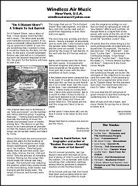 |
The CD arrived promptly, but I've found it best with this type of CD to give it plenty of time to work through my system. I'm so familiar with Syd's recordings that unfamiliar readings always tend to generate a negative reaction on the first few listens. I'll be honest and say that I've found that most such projects tend to consist of people trying either to duplicate the original recordings or out-Syd our hero by larruping on tons of 'psychedelic' effects and suchlike. Although there is a slight hint of the above with some of the CD, all of the recordings are sufficiently original to avoid the “pointless covers” trap. I'll admit that the whole thing is a lot more professionally recorded and produced than I'd expected. The tracks I like best are: “The Whole Bit” - Danboid, “Lucifer Sam“ - Sixtynine & the Continuous People, “Love Song“ - Darrell W, “Lucifer Sam“ - Sam from Rochdale (!), “I Know Where Syd Barrett lives“ - Sixtynine & the Continuous People, but a special star prize must go to Captain Wasp for the weirdest Syd cover I've heard since the Fortran 5's “Bike - Sid Sings Syd”. I'm sure that the CD will prove of great interest to Syd fans looking for something new to listen to. (David Parker, 26/02/2002). |
| Psychotic
Reaction n. 6 - December '99 Sixtynine And The Continuous People Reprise (A Live Recording)
|
|
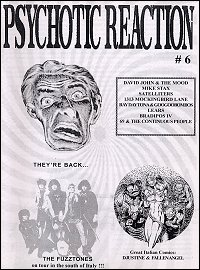 |
Secondo demo dal vivo su CD per Sixtynine And The Continuous People, gruppo di Pordenone dedito a suonare brani dei Television Personalities di cui sono grandi fan. Registrato meglio del precedente lavoro, il CD contiene quattro brani su cui spicca "The Girl Who Had Everything" per la sua chitarra tremolo ed il giro molto ossessivo del basso. "Take It" è molto scatenata, e qui si mischiano pop art e psichedelica rumoristica su di una base ritmica serratissima. "The Painted Word" ci riporta indietro ai temi cari alla new wave con un approccio molto noise che alle volte ricorda i Doors nel cantato. Un gruppo come Sixtynine And The Continuous People è difficile da digerire al primo ascolto ma merita la nostra attenzione per aver intrapreso una strada difficile da percorrere riproponendo brani di un oscuro gruppo inglese. Ci aspettiamo ora una prova su vinile e magari qualche brano originale della band di Pordenone. (Francesco Ficco). |
| Jamboree n.
18 - April / May '99 Sixtynine And The Continuous People First Ever Gig (Live)
|
|
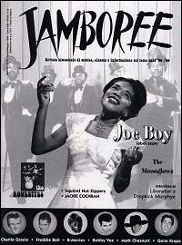 |
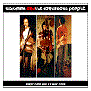 Grazie al mio lavoro di dj e di organizzatore di eventi e di concerti mod e sixties, un giorno mi vedo recapitare da Pordenone il suddetto lavoro da un trio che fregia di ispirarsi ai Creation, ai Tomorrow e, non credo alle mie orecchie, ai grandi e sottovalutati Television Personalities. E' la prima volta, in tanti anni che ascolto musica, che mi imbatto in un gruppo tanto coraggioso da coverizzare un simile modello e tanto commovente per l'impegno e la passione profusi nel cercare di interiorizzare una britannicità così unica e bizzarra come quella dei Television Personalities. Non c'è dubbio, i Sixtynine, vale a dire Filippo al basso e voce, Stefano alla batteria e Pier alla chitarra, sono un gruppo di puri da sostenere incondizionatamente. Il loro approccio riassume sapientemente la psichedelica sixties del loro gruppo guida, una sorta di Velvet Underground con l'aggiunta di un certo pop onirico, favolistico ed ironico tipico degli inglesi, mediante l'uso di un drumming secco, di giri di basso circolari e vorticosi e di fraseggi di chitarra acidi, minimali e leggermente rumoristi e dissonanti. Con tale metodo affrontano brani dei TV come "Scream Quietly", potente e appena appena noisy; "Painted Word", stupendo manifesto malato esistenzialista con echi di folk-rock; "La Grande Illusion", dal piglio decadente; "King and Country", dalla sostenuta ritmicità con una chitarra come una lama, acida e dissonante e con un basso che lancia strali circolari per finire su lidi flippati carichi di wah-wah; "Painter Man", dei Creation, modernizzata e resa più asciutta e decantata del suo cromatismo originale; "A Long Time Gone", vero sixties pop minimale e "Brian's Magic Car", acido minimalismo pop reso colto dal filtro dell'esistenzialismo e della dissonanza. Gruppo da seguire attentamente nella sua evoluzione e, dal canto mio, mi auguro che sia giunto il momento di scrivere brani propri con quel sapere freakbeat tipicamente britannico che i Sixtynine sanno così bene scandagliare. (Enrico Lazzeri). |